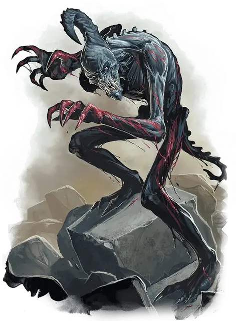

Бабау
Babau
Среднее Исчадие (Демон), обычно хаотично-злое

Класс Доспеха 16 (природный доспех)
Хиты 82 (11к8 + 33)
Скорость 40 футов
| мод | спас | ||
|---|---|---|---|
| СИЛ | 19 | +4 | +4 |
| ЛОВ | 16 | +3 | +3 |
| ТЕЛ | 16 | +3 | +3 |
| мод | спас | ||
|---|---|---|---|
| ИНТ | 11 | +0 | +0 |
| МДР | 12 | +1 | +1 |
| ХАР | 13 | +1 | +1 |
Навыки Восприятие +5, Скрытность +5
Сопротивление урону огонь, холод, электричество; дробящий, колющий, рубящий от немагических атак
Иммунитет к урону яд
Иммунитет к состояниям отравление
Чувства тёмное зрение 120 футов, пассивное Восприятие 15
Языки Бездны
Опасность 4 (1100 опыта)
Бонус мастерства +2
Среда обитания Город, Подземье
Действия
Мультиатака. Бабау совершает две атаки Когтями. Он может заменить одну из атак на использование Ослабляющего взора или Использование заклинаний.
Коготь. . Рукопашная атака оружием: +6 к попаданию, досягаемость 5 футов, одна цель. Попадание: 6 (1к4 + 4) рубящего урона плюс 2 (1к4) урона кислотой.
Использование заклинаний. Бабау накладывает одно из следующих заклинаний, используя Мудрость в качестве базовой характеристики и без использования материальных компонентов (Сл спасброска от заклинаний 11):
• Неограниченно: тьма [darkness], рассеивание магии [dispel magic], ужас [fear], раскалённый металл [heat metal], левитация [levitate];
Ослабляющий взор. Бабау избирает целью одно существо, которое он способен видеть, и которое находится на расстоянии не более 20 футов от него. Цель должна совершить спасбросок Телосложения Сл 13. В случае провала цель в течение 1 минуты наносит лишь половину урона атаками, основанными на Силе. Цель может повторять спасбросок в конце каждого своего хода, при успехе оканчивая на себе действие этого эффекта.
Описание
“Большинство детей не производят на меня впечатления. Они представляют собой смесь своих предков, но зачастую гораздо более разочаровывающих. Можно было бы подумать, что два самых прекрасных и кровожадных существа Низших Планов создадут существо с большим потенциалом. Вместо этого отвратительный бабау не может даже приблизиться к дьявольскому великолепию своих родителей”.
— Морденкайнен
Демоны и дьяволы ведут вечный бой за контроль над Нижними Планами. В одной из таких битв сошлись легионы архидьявола Гласии и вопиющие орды лорда демонов Граз’зта. Говорят, Гласия ранила Граз’зта своим мечом, и в том месте, куда пала его кровь, появились первые бабау. Их внезапное появление помогло обратить Гласию в бегство и заслужило Граз’зту место среди главных лордов демонов Бездны.
Бабау обладает хитростью дьявола и кровожадностью демона. Его кожистая шкура натянута поверх костлявого тела, а из задней части продолговатого черепа выступает изогнутый рог. Ужасный взгляд бабау может ослабить существо.